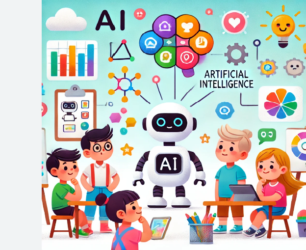

Inteligencia Artificial
Primer Concepto
Es la simulación de la inteligencia humana en máquinas, lo que les permite
percibir, razonar, aprender, resolver problemas y tomar decisiones, a
menudo procesando grandes cantidades de datos y adaptando su
comportamiento.
Segundo Concepto
Esta tecnología, que se basa principalmente en el aprendizaje automático y
el aprendizaje profundo, es un campo amplio de la ciencia informática que
abarca disciplinas como la lingüística y la neurociencia
Enlace de Intelegencia Artificial

Tipos de IA
- IA débi (o estrecha)
- Inteligencia Artificial General (AGI)
- Autoconciencia